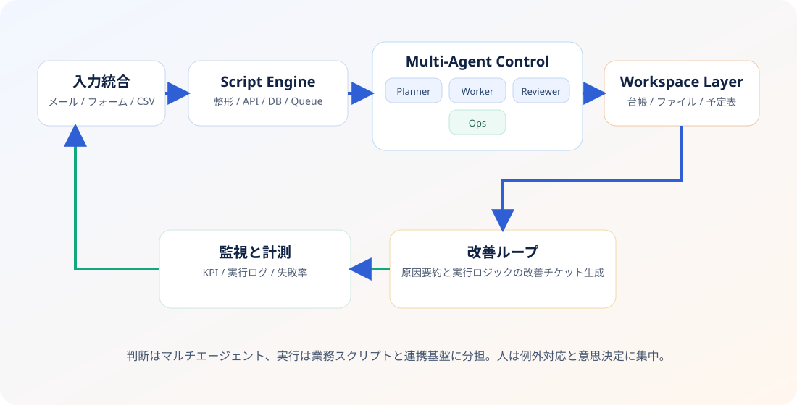
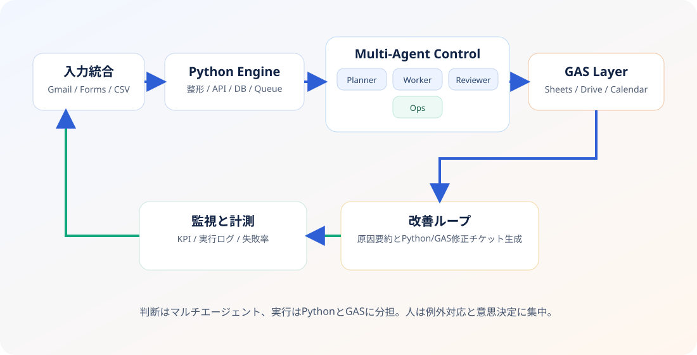

1. Capture
受注、問い合わせ、申請、アラートなどの発生点を統一フォーマットで捕捉。
作業手順でなく、イベント発生点を定義します。エージェントはイベントを受けて役割単位で動きます。
受注、問い合わせ、申請、アラートなどの発生点を統一フォーマットで捕捉。
重要度・期限・ドメインに応じて、最適な専門エージェント群へ即時ルーティング。
調査、判断、実行、報告を分業し、必要時のみ人間承認へエスカレーション。
完了ログを再学習し、次回イベントで判断速度と精度を継続改善。
単一AIではなく、役割が明確なマルチエージェント構成を採用。イベントごとに必要な群だけ起動し、 実行後は監査ログを残して終了します。

契約条件の整合チェック、見積作成、承認依頼まで自律実行。
請求生成、入金突合、未収アラート、経理連携を自動化。
問い合わせ分類、回答草案、対応履歴更新、再発防止連携を実施。
ログ要約、原因仮説生成、一次切り分け、オンコール通知を担当。
閾値監視から発注案作成、承認依頼、発注反映までを一貫処理。
ポリシー違反、承認漏れ、個人情報リスクを常時監視。

人間介在は障害ではなく品質装置です。金額、契約、法務、顧客影響の大きい局面にだけ挿入します。
小さく始めて、イベント定義と承認設計を固めながら対象業務を横展開します。
イベントポイント棚卸し、リスク分類、最初の5-8エージェントを構築。
対象業務で本番稼働。例外パターンを収集し、再実行フローを最適化。
複数業務へ拡張し、20-40エージェント規模の並列運用へ移行。
定型処理は限りなくゼロに近づけます。ただし責任判断はあえて人間ゲートを残す設計です。
イベント駆動の起動制御と監査ログ設計により、常時起動を避けつつ責任追跡を可能にします。
置き換えは不要です。既存システムを活かし、API・ファイル連携・通知連携で段階導入します。
現在の業務を「イベントポイント」と「人間承認ゲート」で再設計し、初期実装の優先順位を提示します。
資料が未整理でも問題ありません。現場ヒアリングから設計を開始できます。
営業・売り込みは本フォームで受け付けていません。該当内容は自動的に除外される場合があります。